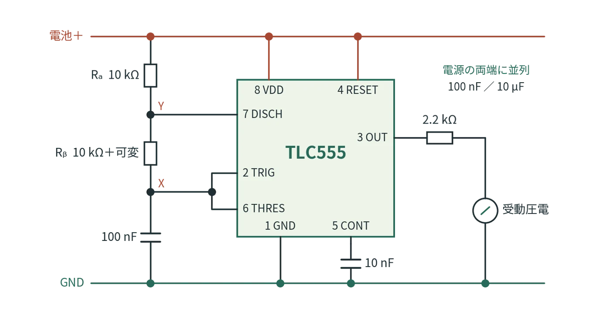

第38章 アナログ電子楽器を組む
TLC555 と乾電池で、つまみで音程が変わる電子楽器を作る。
この章で学ぶこと
- 部品をそろえ、ブレッドボードに配線する
- RC回路の充放電から、発振周波数の式を導く
- 鳴らないときの確認手順を知る
製作1 TLC555 の連続可変ピエゾ発振器
つまみで発振周波数を連続的に変える単音楽器を作る。電源は単3乾電池3本の電池ボックス（公称4.5 V）。配線中は電池ボックスを外す。発音体には受動の圧電サウンダを使う。発振回路を内蔵したアクティブブザーは、外部から与える周期をそのまま音高へ移す部品としては適さない。圧電素子は共振域から離れると弱く鳴る。直接駆動する低インピーダンスのスピーカーやイヤホンはこの配線の負荷として想定していない。
例・手順
部品。 TLC555CP（DIP-8）、ブレッドボード、単3電池3本とボックス、受動圧電サウンダ、B100kの線形可変抵抗、10 kΩ抵抗2本、2.2 kΩ抵抗1本、100 nF コンデンサ2個、10 nF コンデンサ1個、10 µF コンデンサ1個、配線材。100 nFのタイミング用と電源用を区別して配置する。ICパッケージを上から見て、切欠きを上にした場合、左上が1番で、反時計回りに数える。 TI S20
| 端子・部品 | 接続 |
|---|---|
| 1 GND | 電池−（GND） |
| 8 VDD、4 RESET | 電池＋（VDD） |
| 2 TRIG、6 THRES | 一緒にしてタイミング節点 X |
| 7 DISCH | 節点 Y |
| VDD–Y | |
| Y–X。可変抵抗の摺動端子を隣の外端子の一方と結び、この組と反対側の外端子を使う | |
| X–GND | |
| 5 CONT | 10 nF を介して GND |
| 3 OUT | 2.2 kΩ → 受動圧電サウンダ → GND |
| バイパス | VDD–GND 間に 100 nF と 10 µF を並列。極性付き10 µFは＋をVDD、−をGNDに。100 nFはIC近傍に置く |

音の高さはどの式で決まるか
コンデンサの電圧 は、抵抗 越しに一定の へ向かうなら に従う。初期条件 に対する解は 証明は差 を取って とし、初期値を入れればよい。抵抗1 kΩと容量1 µFの積は1 ms。コンデンサ電圧は瞬時には反転せず、一定の速さで直線的に変化するわけでもない。
TLC555の典型的な閾値を と とし、放電スイッチのオン抵抗を無視する。充電時は 越しに VDD へ向かい、電圧差が から へ半減する。放電時は 越しに0へ向かい、電圧自体が から へ半減する。両方で だから
は出力の高レベル時間の割合（デューティ比）。公称部品で 〜110 kΩ、 nF なら約480〜63 Hz。中点 kΩ で約111 Hz。可変抵抗の線形な回転位置と音高の関係は、逆数と対数の合成ゆえ均等な半音目盛にならない。圧電サウンダには音量のばらつきがあり、この範囲の下端が聴こえにくい場合もある。
やってみよう
組立と確認。 ①電源を外してICを中央の溝にまたがせる。②GND と VDD を先に配線し、ついで X と Y を接続する。③抵抗レンジで X–Y 間の抵抗を確認するなら、電源を外し、並列経路が影響する場合は の片端を外して測る。④電池の極性と電源レールの分断箇所を確かめて通電。⑤無音なら 4 RESET が電源＋、2と6が同じ節点、サウンダが受動型かを確認し、つまみを高音側から試す。周波数計かオシロスコープがあれば 3 OUT を GND 基準で測る。部品の公差や圧電素子の共振により理論値と音量は変化する。使用する電源を本実習の乾電池に限定し、商用電源の回路へつながない。
やってみよう
実作。 つまみで高音から低音へ滑らせ、同じ方向に4回弾く。停止、速度、反転点を変えてリズムを作る。キャロリーナ・アイクによるドビュッシー《月の光》のテルミン編曲では、離散鍵盤を介さずに接近する音高と、発音の輪郭を聴く。聴取対象の連続的制御に共通点があり、テルミンの容量検出と本作の抵抗制御では回路原理が異なる。 Metropolitan Museum S21 · 録音 L22
ここだけ押さえる
- 配線中は電池を外す。発音体は受動の圧電サウンダを使う。
- この回路の音域は約63〜480 Hz。
- つまみの回転と音高は、等間隔の半音にはならない。